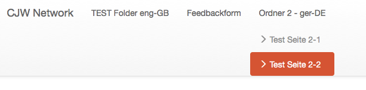
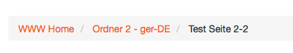
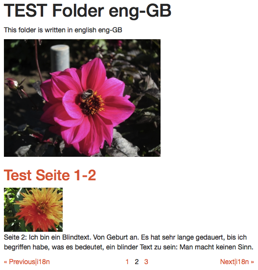
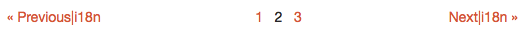
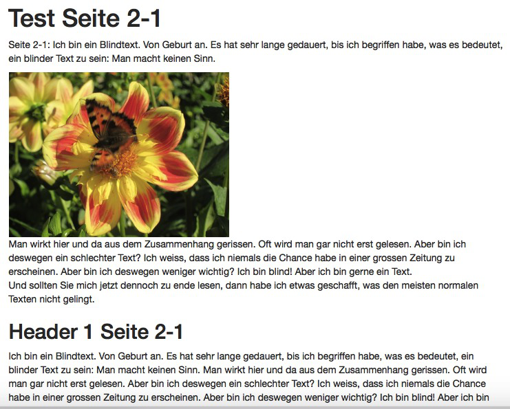

Presenters
- Ekke is a consultant with deep knowledge in eZ Publish 4 and 5, eZ Find / Apache Solr and with a faible for coming cutting edge web technologies. He is one of the organizers of the PHP Unconference since eight years.
- Martin is TODO
-
Donat is owner of Webmanufaktur, a full service web agency in Switzerland. He works as projects manager, software architect and developer and likes thinking outside of the box. In the last year he has been involved in major pure eZ 5 projects.
-
Members of CJW Network
Multiple Colors of Migration
- There are still many (too much) eZ Publish legacy sites
- eZ Publish 5.4 / 2014.11 is supported until May 2019
- So there is a stable business base for the next 4 years
- And since one year in internet is seven years in real live, 28 years of best business!
-
Why waiting? OK, we try to help you with arguments and know how
-
https://github.com/cjw-network/cjw-summercamp-slides/blob/master/Multiple-Colors-of-Migration.pdf
Who is in the audience?
Let us know you better ...
- Who is coming from the eZ World?
- Who is coming from the Symfony World?
- Who has realized eZ Publish 5 sites (productive)?
- Who has realized pure eZ Publish 5 sites (no legacy)?
DOING Agenda
Things we would like to discuss:
- Reasons for not waiting any more
- Run legacy only
- Run Symfony only
- Your fast (easy) way to pure Symfony
Why waiting?
Pro and cons
What are the problems?
Still hard to start, we prepared something
- no starting point: a good eZ Publish version like 4.7 is missing
- many logic is in templates, everything new, everything different?
- no multi site / multi repository setup
- performance, performance, performance,
Why waiting?
Financial reasons - How to sell it to your customer?
- update / upgrade - but still no new feature for editors
-
many security fixes - but often part of maintenance support
-
Relaunch: Make responsive, look at http://getbootstrap.com or http://foundation.zurb.com/
- Relaunch: Mobile first, it is coming to marketing people
- new feature mobile editing
- Do you have one more?
Why waiting?
Technical reasons for starting now
- it is on the upgrade path to eZ Plattform 6
- many security and bug fixes
- TWIG for new templates and fallback to old templates when needed
- easy to extend with Symfony bundles, there are more than 2500 on e.g. http://knpbundles.com/
- switch to responsive web design and make it mobile first
Which version to use?
We need a version as a stable base for the next 4 years
- eZ Publish 5.3 / 5.4 aka 2014.11 is supported until May 2019
- but many fixes are in the legacy bridge (-)
- but newer versions are pre alpha (+)
- but there is no real save version to switch (-)
- solution take our cjwpublish and help to keep it fresh (+)
Run legacy only
Run legacy only
Short introduction
- if you only need the bug fixes and security patches in legacy
- our arguments won't convince you or your customer
- the installation has more than 150 extensions
- then link your requests into the legacy folder
- go the upgrade path https://doc.ez.no/display/EZP/Upgrade
- and read more https://doc.ez.no/display/EZP/Legacy+code+and+features
- but we advice you to go to "Run Symfony only"
Run Symfony only
Team up with a Symfony Crack
- To be honest: as eZ 4 developers, we are complete novices in eZ 5
- It's easier for a Smyfony Crack to learn eZ than other way round
- Symfony community is hungry for a CMS, so watch out for new competition
- But @Symfony cracks: It's not easy: an eZ Publish and CMS expert will reduce your risk
- And will make your content architecture better and more maintainable
- OR take the shortcut for integrators
CjwPublishToolsBundle
Your easy way to eZ Publish Symfony
CjwPublishToolsBundle
for integrators of small to medium sites
- He comes from front end design and speaks fluent HTML and CSS
- He has no problems with digging into template languages
- He prefers solutions with all needed functionality
- He wants to develop web sites fast and easy at low cost
- https://github.com/cjw-network/CjwPublishToolsBundle
Treemenu
cjw_treemenu

{% set treemenu = cjw_treemenu( locationId, {
'depth': '2',
'offset': '1',
'include': [ 'cjw_article', 'cjw_folder', 'cjw_feedback_form' ],
'sortby': { 'LocationPriority': 'ASC' },
'datamap': false } ) %}
{% for item in treemenu %}
{{ ez_content_name( item.node.contentInfo ) }}
{% endfor %}
Breadcrumb
cjw_breadcrumb

{% set path = cjw_breadcrumb( locationId, { 'offset': '1',
'rootName': 'Home',
'separator': '' } ) %}
{% for item in path.items %}
{{ item.name }}
{% endfor %}
Folder with line view screenshot

Folder with line view source code
cjw_fetch_content
{% set listChildren = cjw_fetch_content( [ location.id ], { 'depth': '1',
'limit': listLimit,
'offset': listOffset,
'include': [ 'cjw_folder', 'cjw_article', 'cjw_folder_section', 'cjw_file' ],
'language': [],
'datamap': false,
'count': true } )[ location.id ] %}
{% for child in listChildren['children'] %}
{#{{ render( controller( "ez_content:viewLocation",
{'location': child, 'viewType': 'line'} ) ) }}#}
{{ cjw_render_location( {'location': child, 'viewType': 'line'} ) }}
{% endfor %}
Pagination (was Google navigator)

Article full view screenshot

Article full view source code
{% extends site_bundle_name ~ '::pagelayout.html.twig' %}
{% block content %}
{% if content.fields.title is defined and not ez_is_field_empty( content, 'title' ) %}
{{ ez_field_value( content, 'title' ) }}
{% endif %}
{% if content.fields.short_description is defined and not ez_is_field_empty( content, 'short_description' ) %}
{{ ez_render_field( content, 'short_description' ) }}
{% endif %}
{% if content.fields.image is defined and not ez_is_field_empty( content, 'image' ) %}
{{ ez_render_field( content, 'image',
{parameters: {alias: 'medium', class: 'imageleft'}} ) }}
{% endif %}
{% endblock %}
TODO Multi language

TODO Contact Form
TODO Frontend editing
TODO, aus 2014 Multi-Site/Multi-Repository Setup
Why a Multi-Site/Multi-Repository Setup?
- At CJW Network we have developed a multi-site/multi-repository setup for eZ Publish 4 several years ago
- This allows us to host many individual sites on a single eZ Publish installation
Advantages:
- Central site administration (site activation, cronjobs, ...)
- Easy deployment (update site extension with Subversion)
- Highly reduced maintenance costs (security patches, upgrades)
- Highly efficient use of hardware resources
Disadvantages:
- Some Kernel patches needed
TODO, aus 2014Multi-Site/Multi-Repository Setup in eZ 5
First Approach (proven in production and depreciated)
- Use different ezpublish app directories to host the different sites
Second approach (proven in production)
- Use TODO ab hier bitte überarbeiten:
CJW MultiSiteBundle
TODO, aus 2014Introducing CJW MultiSiteBundle
Although the first approach works fine, it has several drawbacks:
- Application code scattered at different places (site directory, bundle, legacy extension), hard to maintain in VCS, hard to deploy
- Redundancy in config files
- No global settings
-
No central site activation/administration
-
Goal: keep everything in one place!
TODO, aus 2014CJW MultiSiteBundle Features
- Boots kernel and environment based on domain name mappings
- Handles local, staging and live domain names
- Allows for global activation of bundles
- Allows for global settings
- Provides a common console for all sites
- Caches domain name mappings
- Moves cache and log files away from the ezpublish folder
- more to come ...
TODO, aus 2014cjwpublish Directory
The cjwpublish application directory sits next to the ezpublish directory.
cjwpublish
⌞ config
cjwpublish.yml <-- defines active bundles
config.yml <-- allows for global settings
CjwPublishKernel.php <-- inherits from CjwMultiSiteKernel.php
CjwPublishCache.php <-- inherits from CjwMultiSiteCache.php
console
TODO, aus 2014Symfony's app directory is back
Site Bundle Directory Layout
src
⌞ Cjw
⌞ SiteExampleBundle
⌞ app
⌞ config
cjwpublish.yml <-- contains domain mappings
config.yml
ezpublish.yml
...
CjwSiteExampleKernel.php <-- inherits from CjwPublishKernel.php
CjwSiteExampleCache.php <-- inherits from CjwPublishCache.php
⌞ Controller
...
TODO, aus 2014Caveats
Adjustments needed in config.yml to reflect different relative location of kernel
assetic:
...
read_from: %kernel.root_dir%/../../../../web
write_to: %kernel.root_dir%/../../../../web
...
ez_publish_legacy:
...
root_dir: %kernel.root_dir%/../../../../ezpublish_legacy
parameters:
ezpublish.kernel.root_dir: %kernel.root_dir%/../../../../vendor/ezsystems/ezpublish-kernel
More problems of this kind expected!
TODO, aus 2014 Project Status TODO
- Currently in private Beta, not yet released
- Ideas and Feedback welcome
-
Public Beta in October
- https://github.com/cjw-network/MultiSiteBundle
Ressources
Slides as PDF
Slides (Source)
CJW MultiSiteBundle TODO link to cjwpublish
http://vote.netgenlabs.com/
Please Vote!
<Thank You!>
Ekkehard Dörre
http://share.ez.no/community/profile/7431
@ekkeD
http://www.coolscreen.de
Donat Fritschy
https://github.com/dfritschy
http://share.ez.no/community/profile/10451
@webmanufaktur
http://www.webmanufaktur.ch